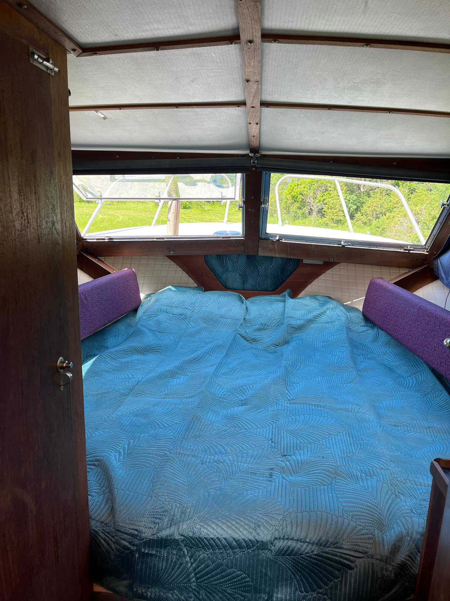
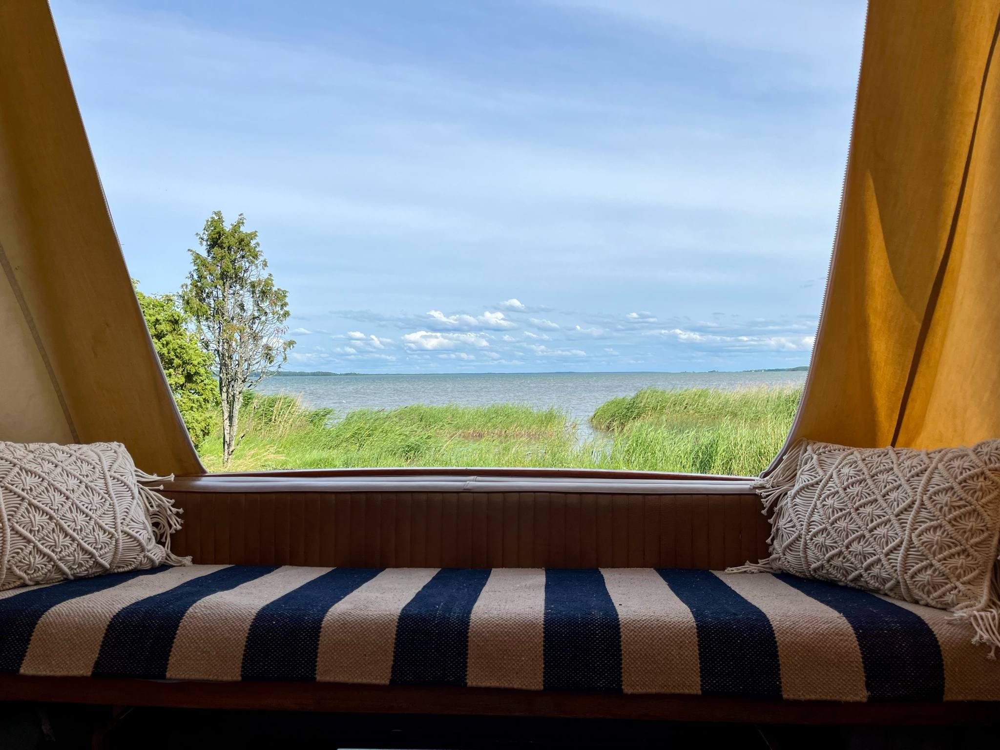
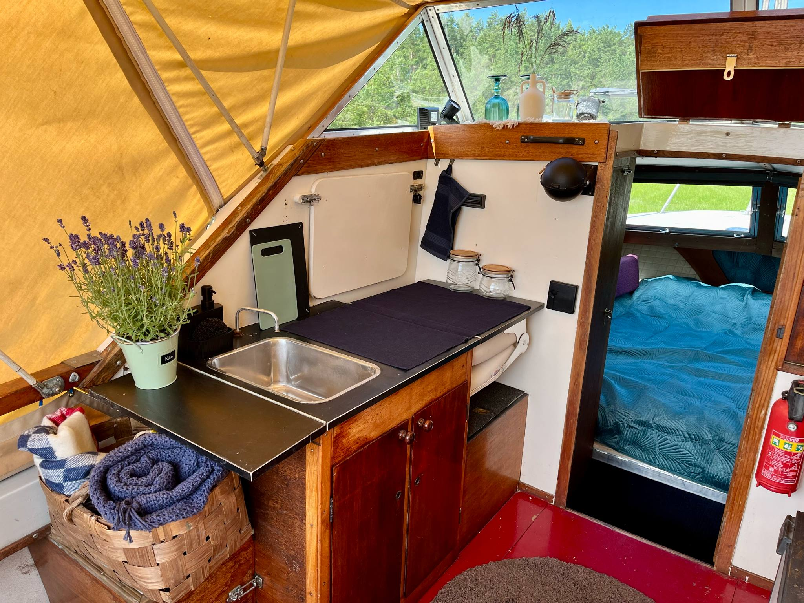
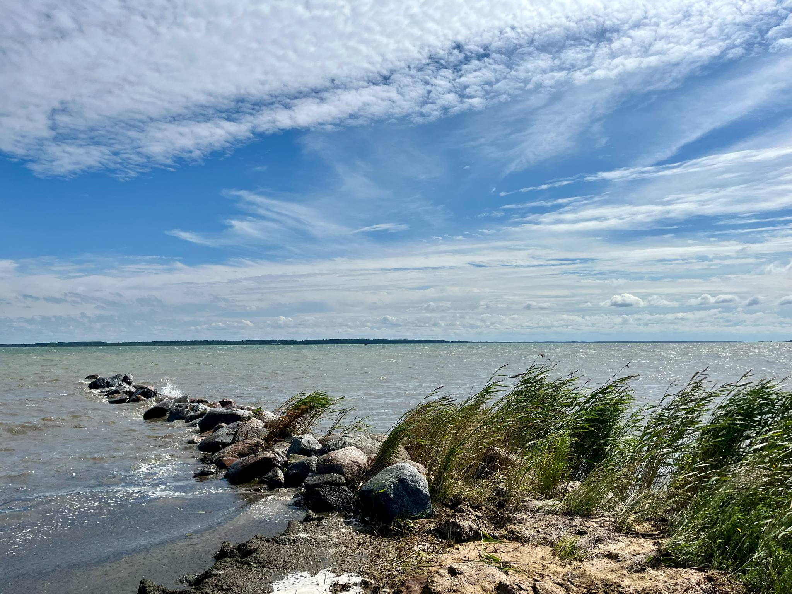
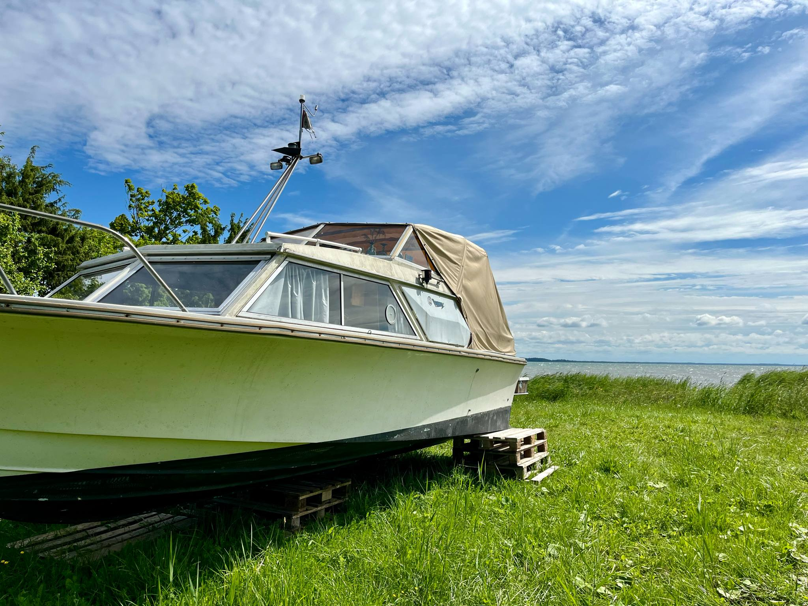
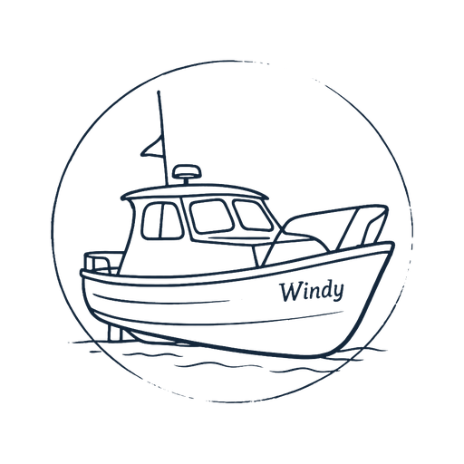
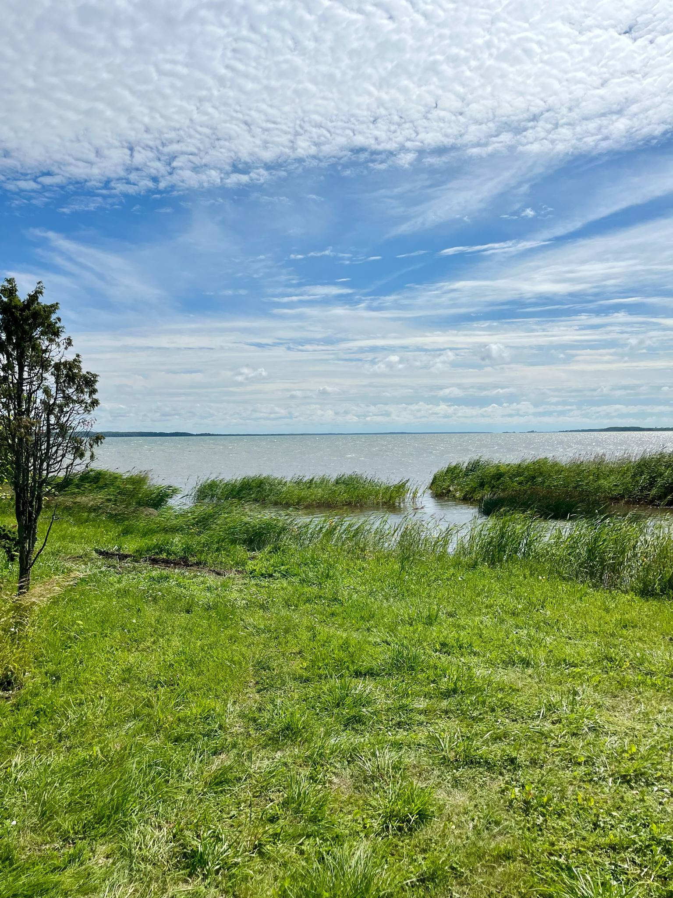
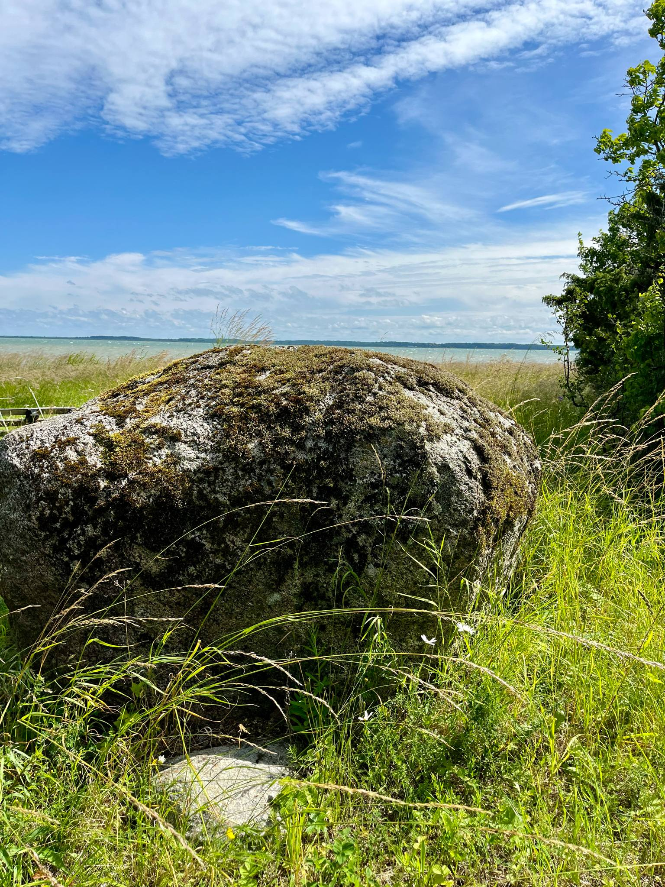

Oma paadipesa
Suur voodi kahele ja võimalus korraks aeg maha võtta. Tule kahekesi või omaette.
Pulli küla ● Saaremaa
Windy on elamusmajutus Saaremaal vaiksel erarannal. Üks paadipesa, mugav voodi kahele ja puhkus mere ääres, päris sinu enda rütmis.

„Siin kulgeb aeg aeglaselt ja jalad harjuvad taas maaga, rannakivide ja adru vahel.”
Omanäoline olemine, väikese krutsiga
Windy on üks väike isemoodi maailm, mis võtab sind oma rütmi ja laseb kõigel muul korraks kaduda. Sobib sulle, kui otsid vaikust, autentsust ja natuke seiklust.

Suur voodi kahele ja võimalus korraks aeg maha võtta. Tule kahekesi või omaette.

Väikeses kööginurgas on gaasipliit. Hommiku ja õhtu saad sättida oma isu järgi.

Rannal on puhkenurk. Ümberringi meri, rannakivid ja tiivulised naabrid, kellel on oma päevaplaan.


Meie väike paadilugu
Meil oli mereäärne paik ja mõte: mis oleks, kui siin saaks ööbida hoopis paadis?
Nii ostsimegi abikaasaga paadi ning hakkasime sellest oma näoga pesa looma. Praegu seisab Windy veel maismaal. Enne vette jõudmist vajab kaiäärne ala süvendamist.
Meile meeldib siin looduse lähedal olla. Seda sama olemist tahame ka sinuga jagada.
Tule meie paadipesaga tuttavaks
Et oleks mõnus tulla
Paadis ööbimine on natuke teistmoodi. Siit leiad vastused praktilistele küsimustele.
Küsi meilt lisaPraegu asub Windy maismaal. Plaanime paadi vette viia, kuid selle valmimine pole veel kinnitatud. Kinnitame sinu peatumise ajal kehtivad olud enne broneerimist.
Praegu dušši ega eraldi pesemisvõimalust pole. Asume mere ääres. Välidušš on plaanis, kuid selle valmimist me veel lubada ei saa.
Lihtne väli-WC asub paadi lähedal looduses. Paadi sees tualetti ei ole.
Jah, kööginurgas on väike gaasipliit. Nõude, joogivee ja toidu säilitamise võimaluste kohta küsi enne tulekut meilt täpsemalt.
Ei. Juurdepääsutee on looduslik ja paati viib redel. Liikumisraskusega külalisel ei ole võimalik seal iseseisvalt hakkama saada. Küsi meilt soovi korral ligipääsu kohta lisainfot.
Meil on umbes kolme kilomeetri kaugusel ka kämpingud, kuhu saab vajaduse korral külalisi ümber majutada. Asendusmajutuse saadavuse ja tingimused lepime sinuga eraldi kokku.
Pikema peatumise soodustus on täpsustamisel. Saada meile soovitud kuupäevad ja küsime plaanid üle.
Võta meiega ühendust ja saada soovitud kuupäevad ning külaliste arv. Kinnitame saadavuse, hinna, maksmise ja tühistamise tingimused enne broneeringu kinnitamist.
Külaliste lood
Meil pole veel avaldatud külaliste arvustusi. Seni saad Windyga tuttavaks meie fotode ja paadiloo kaudu.
Oled juba käinud? Jaga oma kogemustPäriselt kohal
Meie paat asub vaiksel erarannal Orissaare lähedal. Pärast broneeringu kinnitamist saadame sulle e-postiga täpsed kohalejõudmise juhised.
Kuiva ilmaga saab autoga paadi lähedale. Rohke vihma järel tuleb parkida juurdepääsutee algusesse ning edasi jalgsi tulla.
Tee on looduslik. Kui saabumise või parkimise kohta tekib küsimusi, helista meile.
Helista +372 5357 4137
Tule korraks oma rütmi
Üks paat, kaks kohta ja aega mere ääres olemiseks. Kirjuta meile, millal tahaksid tulla.
visitwindy@gmail.comLisa kirjale saabumise ja lahkumise kuupäev, külaliste arv ning küsimused, mis enne tulekut mõttes on.
E-kirja link avab sinu meiliprogrammi. Päring ei ole kinnitatud broneering: saadavuse ja tingimused lepime sinuga eraldi kokku.